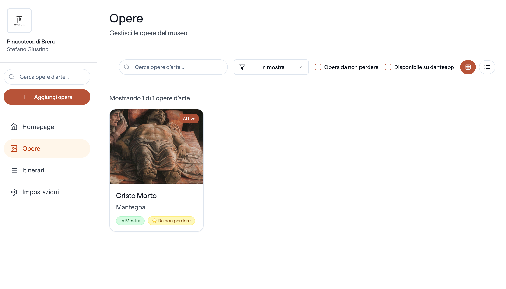
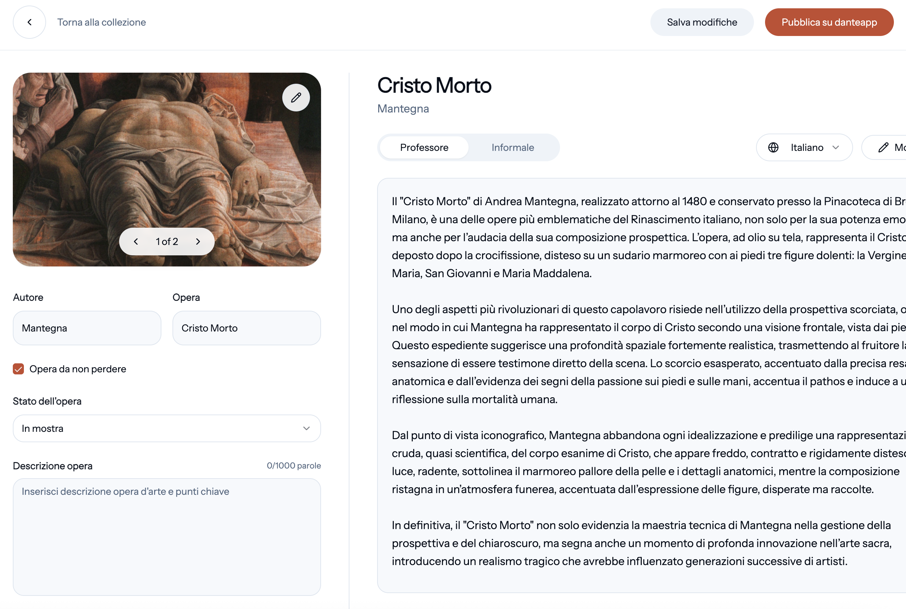
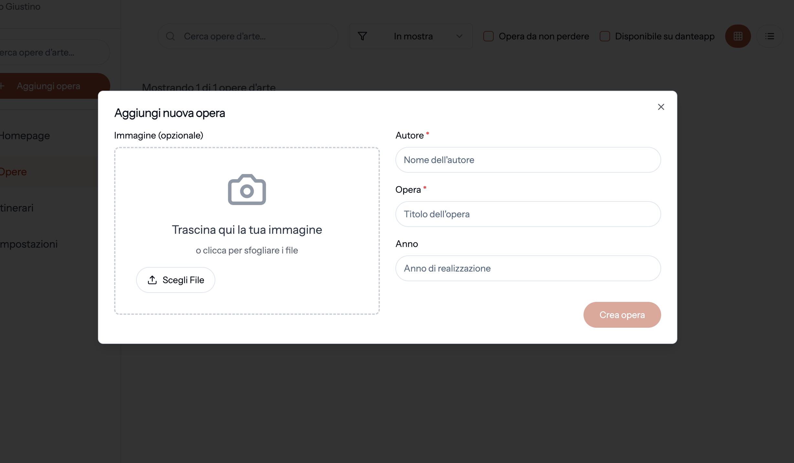
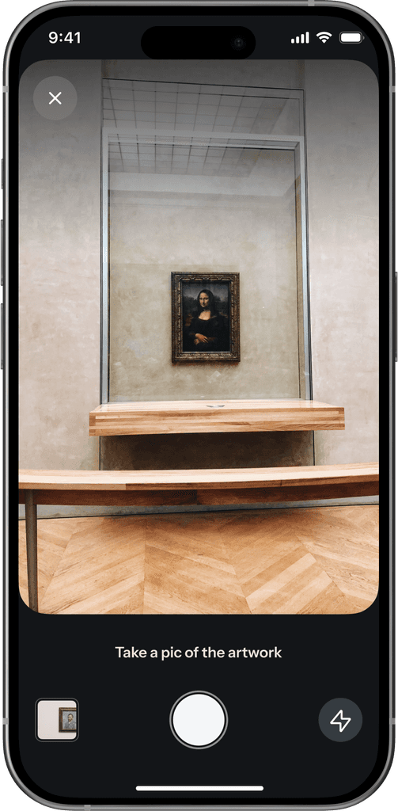
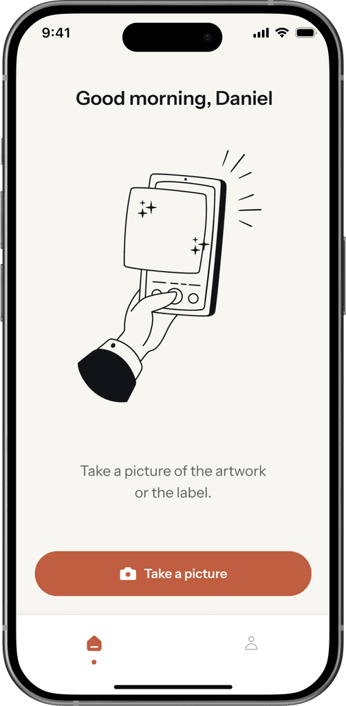
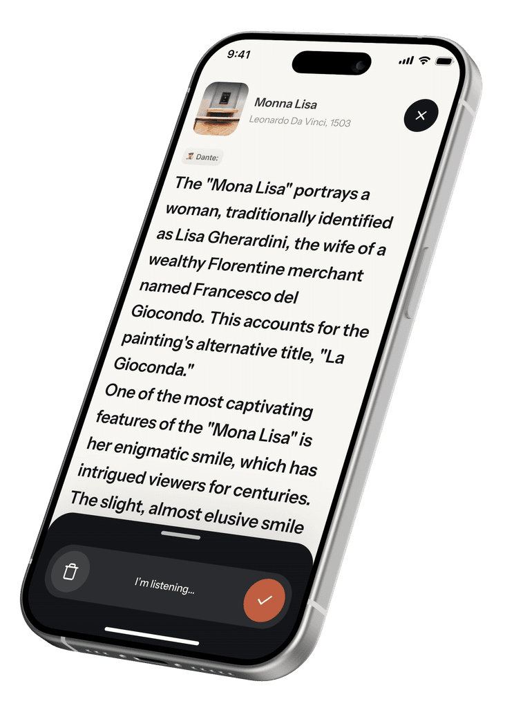
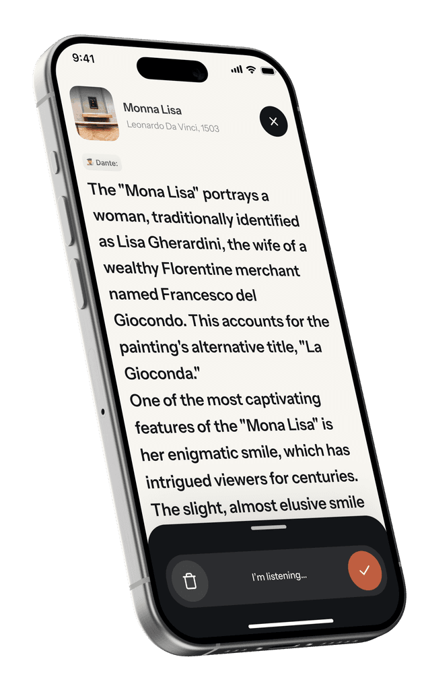

danteapp.ai — per i musei
Dante è la guida AI per i musei italiani. Voi fornite i fatti che contano. Noi li personalizziamo in lingue, toni e formati su misura per ogni visitatore — senza inventare nulla.
Ogni opera che entra in Dantemanager passa attraverso le vostre mani. Voi caricate le immagini, scrivete le note fattuali che contano, decidete cosa pubblicare e cosa no. L'AI non inventa, riformula — nel tono e nella lingua che il visitatore sceglie.

Cataloghi completi, aggiungete o togliete opere in qualsiasi momento.

Date, autori, contesti, dettagli curatoriali. Dante può raccontare solo quello che voi avete approvato.

Una mostra che apre tra dieci giorni? Le opere sono in app il giorno dell'inaugurazione.
Empowered by AI, not made by AI.
Inquadrano un'opera col telefono. In due secondi sanno cosa stanno guardando. La spiegazione è nella loro lingua, nel tono che preferiscono, in lettura o in ascolto. E se hanno una domanda, possono chiederla — direttamente all'opera.

Niente QR code, niente numeri da cercare. Riconoscimento dell'immagine in meno di un secondo.

Una visita per ognuno: dallo specialista all'adolescente. E siete sempre voi a scegliere quali toni mettere a disposizione per ogni opera.

Cambia un fatto in Dantemanager: l'aggiornamento è live in tutte le lingue contemporaneamente.

Chiedono. Dante risponde, restando dentro i contenuti che voi avete approvato.
Niente hardware. Niente sala di registrazione. Niente cicli di approvvigionamento. Vi diamo una mano sull'avvio, voi controllate e approvate. Tutto qui.
Veniamo per 2 ore a fotografare le 10–15 opere selezionate. Vi lasciamo le 5 domande guida per gli audio WhatsApp sui pezzi non documentati.
Dopo materiali e audio (~2 ore distribuite), trovate 10–15 schede già scritte. Correggete in 3 sessioni da mezz'ora, approvate, e al giorno 14 l'app è live per i vostri visitatori.
Per chi vuole massima sicurezza prima dell'apertura: l'app rimane accessibile solo a voi e al vostro team. La usate nelle sale, davanti alle opere vere, segnalate via WhatsApp tutto quello che non torna, iteriamo entro 48 ore. In questo caso il go-live pubblico scivola al giorno 28 — l'app arriva ai visitatori già rifinita davanti alle vostre opere.
Pilota
Per scoprire il potenziale.
Guida live in 2 settimane, con ~7 ore di lavoro del vostro staff. Onboarding strutturato su 10–15 opere selezionate. Opzionale: 2 settimane di testing in museo prima dell'apertura al pubblico, per massima sicurezza. Voi controllate cosa pubblicare. Statistiche d'uso mensili.
Partner
Quando vediamo insieme che funziona.
Si passa a una revenue share sui contenuti premium acquistati dai vostri visitatori. Niente costi fissi. Il museo prende la parte più grande.
Featured
Per chi vuole di più.
Statistiche dettagliate, presenza dedicata in-app, itinerari personalizzati, supporto continuativo per mostre temporanee. Canone annuale, sopra la revenue share.
65 mln
visitatori nei musei italiani nel 2023, per oltre 540 milioni di euro di ricavi.
istat.it
5.000+
musei in Italia. Più della metà non offre ancora un'audioguida.
Ministero della Cultura
1 su 3
visitatori acquisterebbe un'audioguida se disponibile.
Under-19
sono il gruppo di visitatori più numeroso. E sono nati con un telefono in mano.
Crediamo che la tecnologia debba servire l'arte, non il contrario. Danteapp nasce da una domanda semplice: perché la visita al museo, oggi, è meno coinvolgente di un episodio di podcast?